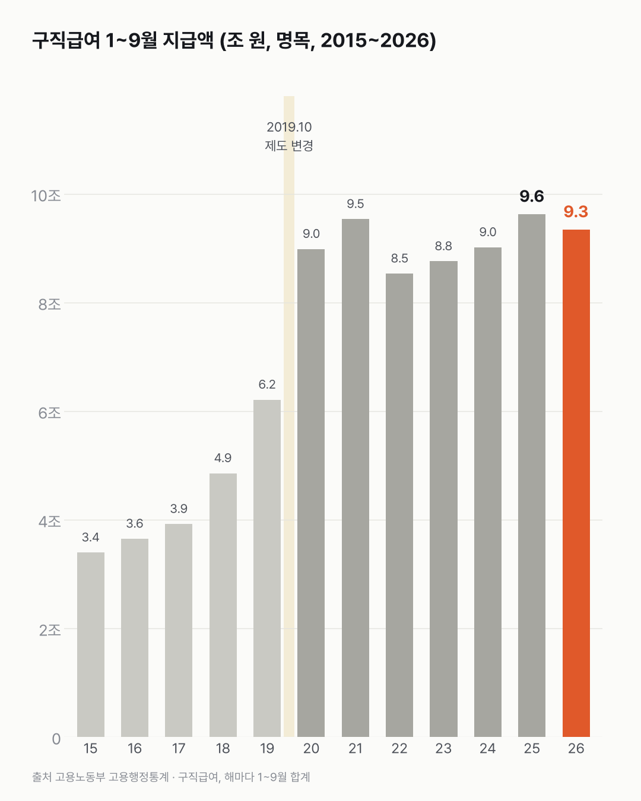
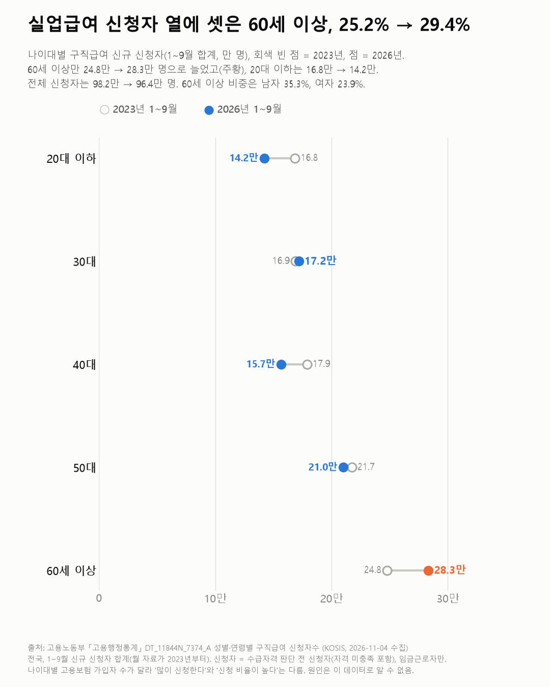

실업급여, 정말 해마다 최대일까요?
실업급여가 해마다 최대를 넘는 건 아니에요. 2019년 10월 제도가 바뀐 뒤 1~9월 지급액은 8.5조~9.6조 원 사이였어요. 크게 늘어난 건 60세 이상 신청자예요(24.8만 → 28.3만 명).

3줄 요약
- 2026년 1~9월 실업급여(구직급여)는 9.35조 원으로, 2025년 같은 기간(9.63조 원)보다 2.9% 적어요.
- 2025년은 한 해 12.3조 원으로 2015년 이후 가장 많았어요.
- 2026년 1~9월 신청자 가운데 60세 이상이 29.4%예요(2023년 25.2%).
'실업급여 역대 최대' 같은 제목의 기사가 몇 해째 나와요. 정말 해마다 최대인지, 월별 지급액을 같은 기간끼리 더해 봤어요.
2026년 1~9월 지급액은 9.35조 원이에요. 2025년 같은 기간(9.63조)보다 2.9% 적어요. 1~9월 신청자도 96.4만 명으로 2025년(99.4만)보다 적었어요.
최대는 2025년이었어요. 한 해 12.3조 원으로 이 표(2015년~)에서 가장 많아요. 2019년 10월 제도가 바뀐 뒤 1~9월 지급액은 8.5조~9.6조 원 사이예요.
누가 신청할까요? 2026년 1~9월 신청자의 29.4%가 60세 이상이에요(2023년 25.2%). 60세 이상은 24.8만 명에서 28.3만 명으로 가장 많이 늘었어요(+3.5만). 30대는 16.9만에서 17.2만으로 비슷했고, 20대 이하는 16.8만에서 14.2만, 40대는 17.9만에서 15.7만 명으로 줄었어요.
남녀로 나누면 60세 이상 비중은 남자 35.3%, 여자 23.9%예요(2026년 1~9월).


60세 이상 가운데 고용보험에 든 사람이 얼마나 늘었는지는 이 표에 없었어요. 그래서 신청자가 가입자에 비해서도 늘었는지는 셀 수 없었어요.
이 숫자는 어디서 왔나요
출처
어떻게 셌나요
- 고용노동부 「고용행정통계」의 월별 신청·지급 기록이에요.
- 구직급여는 실업급여 가운데 기본 급여예요. 본문의 '실업급여'가 이거예요.
- 신청자는 받을 자격이 있는지 판단하기 전의 신규 신청자예요. 자격이 안 되는 사람도 들어가고, 임금근로자만 세요.
- 2026년이 9월까지라 해마다 1~9월 합계로 맞췄어요. 금액은 명목이에요.
- 2019년 10월에 지급 수준·기간이 바뀌어 시계열이 끊겨요(차트 1 회색 띠). 그 앞뒤 금액은 직접 비교하지 않았어요.
한계 3가지
이 데이터로 말할 수 없는 것
- 지급액은 받는 사람 수, 하루 지급액(최저임금에 연동된 하한액), 지급 기간이 함께 움직인 결과예요. 무엇 때문에 변했는지는 나누지 않았어요.
- 나이대별 고용보험 가입자 수로 이 표를 나누지 않았어요. 60세 이상 신청이 늘어난 데엔 이 나이대 일하는 사람 자체가 늘어난 영향도 있을 수 있어요(65세 이상 취업자 글).
- 원인(경기·제도)은 이 데이터로 알 수 없어요. 지역별 비교는 다루지 않아요.
새 글 나오면 받아 보기
피드 리더 앱에 이 사이트 주소를 한 번 넣어 두면, 새 글이 올라올 때 앱에 떠요. 가입이나 메일 주소는 필요 없어요.
받는 법 보기
- 피드 리더 앱을 하나 골라요. 새 글을 모아 보여 주는 앱이에요. 예를 들면 Feedly나 Inoreader가 있어요. 둘 다 무료고 웹·휴대폰에서 써요.
- 앱에서 '구독 추가'(+)를 누르고 아래 주소를 붙여 넣어요.
- 끝이에요. 새 글이 올라오면 앱 목록에 떠요.
https://protofu.github.io/opendata-insight/feed.xmlFeedly를 쓴다면 여기를 눌러 바로 추가할 수도 있어요.